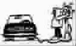

放 下
●张哲嘉
最近我与一位美国籍的出家师父相约茶馆，用英文谈论心经。师父听完我的烦恼，要我一边提起他刚买的3罐番茄汁，一边跟他说话。随着时间流逝，我受不了酸痛，放下了手。师父却说：“提起来，继续谈。”又过了15分钟，我实在承受不住了，师父说：“现在可以放下了。”看着我孤疑的脸，师父笑了起来。
“你不喜欢提着重物跟我说话，却为何喜欢带着烦恼来跟我说话呢？手酸了，放下就好，对待烦恼，不也是如此？烦恼就像这些番茄汁，是你自己用手举起来的。”
最近我开始练习，一手举起有重量的东西，一边想事情。手酸了，自然会放下，有一天我也会做到，心累了，就把心事放下来。
(言舒摘自《中山日报》)